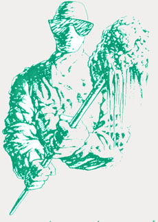

What is the value of a worker's life?
Submitted on Sat, 09/09/2006 - 12:44am
By Arthur J. Miller
Under capitalism the value of a worker's life is measured in the ability to produce profit, consumption for profit and to reproduce the next generation of workers. For the maximum profit in production, the cost of production must be kept as low as possible even at the expense of the safety and well-being of those that do the producing. Even in the union shops of the business unions an injured or dead worker can be placed with a simple call down to the union hall for a dispatch for a replacement.
Down at the local shipyard we were told to go down into two different tanks on a barge a remove some valves. In the first tank the lines contained Caustic Soda, which is highly corrosive. We were told to wear rubber gloves, safely glasses and the spray down the flanges with vinegar water. I asked what the danger was and the foreman told us that if we were to get any on our skin it might burn a little. When I got down into the tank, which was the pump room for the produce, I noticed that there was a full decontamination station. That set an alarm off in my head because why would they have a decontamination station down in a tank if the produce were such a minor danger. The next thing I noticed was that the valves, suction and discharge, were closed at the bulkhead, which meant the produce was isolated from the tanks that held it, and that the valves at the pumps were closed, which meant that more than likely the pipes still had the produce in and it was possible it could be under pressure.
I then went to the safely officer and asked him about Caustic Soda and to find out about the stuff in the other tank which was a form of liquefied fertilizer. He told me that there had been injuries in the past in the yard due to Caustic Soda. One pipefitter had part of his face and neck burned that left scars. Another had his knees burned. Another had his arm burned as the Caustic Soda burned through his closing. I then asked for the MSDS (Martial Safely Data Sheet), which by law all companies must have on all chemical hazards.
While the safely officer was trying to find the MSDS on Caustic Soda the pipe foreman came up to me yelling about why I was not down in the tank taking out the valves! I told him I was getting the MSDS so that I could do the job as safe as possible. He yelled at me that if I did not like the job to call the hall, a rather useless act. I yelled back at him that if I called anyone it would be OHSA! And that I had the right to know what the dangers were.
The superintendent overheard the vociferous discussion and stepped in and said that, for now the valves were not to be removed. The shipfitters were cutting out the bulkheads and they could cut around the pipes without having the valves removed. Later on the whole pump room was to be removed, but they would deal with that problem later.
I did not refuse to do the job, I only wanted to do it safely. I had already determined that face shields and rubber boats were needed and some type of splatter shield in case any of the Caustic Soda was under pressure. It is not that the safety measures would costs money or much time, but rather that safely concerns costs the company something and maximum profit was the primary goal and a worker's life meant next to nothing. It seemed that just having safety concerns was counter to the interests of the company. The next day I was laid off. I guess in the hope that the next workers sent down there would do the job without safely questions.
In the months before the work in the tanks on that barge we are in the process of a major overhaul of a tugboat. This overhaul includes replacing the engine and two generators with new ones. This work entails removing all the piping both to get the engine and generators out but also removing piping so that new piping can be made for the different piping configuration that the new engine and generators would need.
To save time and money, thus making the owners more wealth, rather than have the lube oil and fuel oil lines sucked out by a tanker truck we are told to cut those lines and let what is in those lines drain into the bilge. The owner's thinking is that since the bilges must be cleaned before a "Safe For Hot Work" permit is issued, why not remove the lube oil and fuel oil at the same time by dumping it into the bilge? That creates a fire danger as we are working around very flammable martial below us. Many of the pipes we must remove run in part in the bilge and thus we must work in an oily mess. But the danger is just a calculated risk and the danger to us workers and the conditions we must work in is not a consideration in the bottom line costs of such a job. Though the engine room was not "Safe For Hot Work" the outside bulkheads were being burnt on and at times there was hot burning slag raining down on us. At one point when I was draining fuel oil a burner started to burn right above me. I went up yelling for him to stop. "Hey brother you're going to burn the boat down with us inside it!"
When it came time to remove the mufflers off the generators I requested a beam clamp in order to safely lower them down. First the foreman asks that we lower it down by hand saying it could not be that heavy. The muffler is in the overhead and is made out of steel and I told him that we are not going to lower it by hand. No beam clamp can be found and rather than take the time to have the steel shop make one and pay that small expense, the foreman tells us to lower it down with rope any way we can. We got the first one down without much of a problem. Using rope means that when you get the last bolt out the muffler will fall some no matter how tight the rope is because the rope will stretch. So we knew to stand way out of the way. On the second muffler when the rope stretched it broke and the muffler fell about 8 feet down. Doing the job safely with a beam clamp and a chainfall meant cutting in to profits and that just cannot be allowed even at the expense of safe working conditions.
We had to take off the piping to the oil coolers, which were all six inch pipe. At the top of the out let of the waterside of the cooler was a six inch angle valve. Even with all of us pulling with rope there was no way we could lift that value. There was a padeye in which we could hook a comealong so the foreman gives us a small comealong. I notice that this was the same comealong that I had brought in to be red tagged until it was fixed because when you change gears the load would free fall. That meant whenever you changed gears to pick up or to lower a load the load would fall. I checked it to see if it had been fixed and it had not been. I found the shop steward and showed him the problem with the comealong and we got a red tag and we both signed it, and had witnesses to that so that if the red tag was removed a safety grievance would be filed.
Once we had a lot of piping, values and other stuff removed the foreman wanted us to get all that martial out on main deck. We were going to hook up a chainfall at the top of the stairs to pull each piece out. The foreman decided that would take too much time and gave us a pulley and some rope. In order to get up the stairs someone had to be by the load to make sure that it did not get caught up on the stairs. With a pulley you have no means other than your own strength to keep the load from going back down. With a chainfall, that works right, the load stays where it is until you either lower it of raise it. We left all the martial down there.
Removing the insulation off the exhaust piping had covered much of the engine room with dust. I had asked the foreman if the insulation has any asbestos in it. He told me no. Then one day we were all told to leave the boat. The tests results on the insulation had come back positive for asbestos. For over a week those of us working in the engine room had asbestos raining down on us. Though our lives may not have any value to the company, but in their mad pursuit of profit they ended up costing themselves profit because the tug boat had to be shut down and since the dust was now all over the place there was a much larger area to clean-up than if they had waited until the results came back in and then just had to contain the asbestos in stripping the insulation off the pipes..
It would seem that these safely issues should be the concern of the union. We had tried to file a grievance about the asbestos, we were told that the company was sorry. We tried to file a grievance about having workers clean the tops of the engines while we were under them and thus had stuff falling on us. The company was sorry. Later that day we had fire raining down on us instead. Every time there is a grievance the company is sorry and nothing changes. It was not the fault of our shop steward, he did try but the union would not back him up.
One of the issues in the yard is overtime work. Yes we have the right to turn down over time work, but the company uses a part of the contract that says they may keep workers based upon "skills and ability." The company says that willingness to work over time is an ability, so if we refuse overtime we can be bumped down the sonority list by someone who will work overtime. Our shop steward was the most insistent of all of us about refusing to work over time. He did not have to worry about being bumped because the shop steward is always number one on the seniority list. That pissed off the hall cats of the union because they are more pro-over time than is the company. As in many construction unions, we pay both a standard union dues and what is called "working dues." Working dues is based upon how much you work. So the more hours we work the more money the union gets.
One day our union B.A. came down to the yard. He told the shop steward that if he did not agree to work over time that he would no longer be the shop steward. We did not realize that the B.A. had the complete power to appoint shop stewards and to get rid of them. No we don't have yearly elections. The worker refused to agree to work over time and the B.A. appointed a new shop steward. The guy he appointed had been a pipe helper and was made a journeyman, without apprenticeship or test, by the B.A. He had been low on the seniority list. So without the B.A. talking to any of us he makes this guy shop steward and thus jumping over all of us to be number one on the seniority list. Why was such favors shown this guy? Could it be that his brother was the union dispatcher?
The next time the B.A. came to the yard he told us that it is his power alone to appoint shop stewards and that the shop steward works for him. So with the conditions already bad we now have a shop steward who is a lackey of the hall cats.
About a week ago while inspecting pipe going to the keel coolers of a large tug, a hole was found in a pipe. This pipe was down in the infamous number 14 double bottom tank. I had already worked in that tank three others times when the tug was in so with two other pipefitters and a welder I found myself in that damn tank again. That tank is tight to begin with, but then you had to crawl under the foundation of the port engine it was even tighter. To make matters worse there were pipes running through some of the holes you had to crawl though so you had to squeeze your body through them. There was mud and anti-freeze on the bottom of the tank, which you had to lie down in because there was only enough room to work the pipe lying down. I could not get in there without crawling around the backside. So first the other two pipefitters who were thinner than I am tried to do the job. The first one who tried was a building trades fitter who had never worked in such a place. He had never gotten claustrophobia before, but when he reached where the work was he turned around and had to get out of there. The look on his face was of sear terror.
Then the other fitter went in and got the old pipe cut and the new one tacked up. Once the new pipe was out of the tank and welded up, I took it around the backside. We had already nearly completed our normal 8 hour shift when this job came up and by the time it was done we had pull down a 15 ½ hour shift.
The tug had to leave at high tide and we were done shortly before it left. This job should have been done while the tug was in dry dock, but in the planning of the job it got left to the last moment. Thus the company's crisis became our hell. It only got done because of the human solidarity between us workers who gave comfort and aid to each other to get through such hard conditions. At what point do we tell the capitalists that their problems are not our problems and refuse to bail them out? Like it or not that time is coming is coming for all workers.
The painters are pushed very hard to get their work done and sometimes that causes the rest of us problems. Another pipefitter and myself were working on the lines to the steering shaft when all of a sudden we hear the tank lid being closed. Luckily I was near the tank opening and yelled out to stop them. Had we been further in the tank we could have been sealed in the tank. The painters did not know that anyone else was working on the tug and they were getting it ready to paint it. They were pushed so hard they did not have time to think about the other workers who may be around them.
On another tug we had to work a Saturday because the new sea valves had just come in and the tug was scheduled to leave drydock on Sunday. There we were installing the sea valves right off the sea chest when strong flumes hit us hard. Our eyes and throats were burning and we grabbed rags to cover our mouths as we ran out of the engine room and off the tug. All of the painting is done at night and on weekends because other workers cannot work around the painting. Marine paint is very strong and toxic. The painters painted the exhaust trunk that was right over the top of us. They were in such a rush they did not take to time to see if any one was in the engine room and to warn them. I was sick for two days after that. All the foreman would say is that we should have had our respirators on, but how would we know to use them without some warning?
The capitalist system places little or no value on the lives of workers. We can be replaced. Workers are injured, sicken and killed throughout the industries so that the bosses can make their profits. Profits are the highest economic and social valve under capitalism and we workers; our communities and the environment have the lowest economic and social valve. It should be clear to all that capitalism cannot be reformed because the interests of capitalism and the interests of workers are too far apart to ever find common ground.
The labor movement has been too concerned about more nickels and dimes for bargaining units that it often over looks the conditions of labor and the well-being of our communities and the environment. We need more than just these bargaining units; we need a labor movement based upon the idea on universal class solidarity as a way of life.
This means we look out for each other and the highest concern of all is the well-being of all. No job that we perform is more important than the well-being of the workers who do the work. Even when pushed hard by the bosses, we should first look out for each other.
An jnjury to one is an injury to all, is the most fundamental principle our class should live by. I have a friend, and long time public worker, who is bed ridden with cancer which is killing her. I visit her often and try to make her life more comfortable, not out of some bleeding heart charity, but out of solidarity. Solidarity is not just helping some strike action; it must become a way of life for us working people. Be it on our jobs, be it in support of workers on other jobs, be it in our communities, solidarity does not have an up or down hierarchy of importance. It matters not what the situation workers find themselves in, sick in bed, fighting conditions on the job or resisting the boss's wars. Solidarity is our revolutionary way of life and the means of creating a new society within the shell of the old.